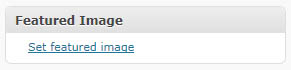
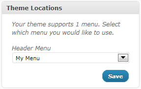
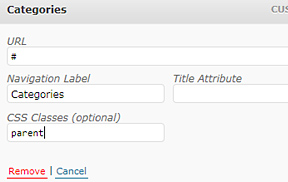
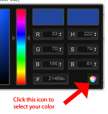

Documentation (last updated 10.6.2010)
TABLE OF CONTENTS:
- Markup and Style
- Supported Web Browsers
- Image dimensions
- Setting featured images
- Menu management
- Widgetzed areas
- Theme Options
- Support & Feature Requests
- Updates
Markup and Style
Shaken Grid is built on HTML5, CSS3, and a little bit of jQuery. The grid structure is controlled by the jQuery Masonry plugin. The main CSS file (style.css) is heavily commented and includes an index at the top to help users navigate through the styles. If you have customizations to make, I recommend adding the CSS changes to skins/custom.css and then activating the Custom skin under the theme options. While Shaken Grid uses cutting edge techniques, less-cool web browsers (Internet Explorer) are still supported, which leads us to our next section.B) Supported Web Browsers
Shaken Grid has been tested on all modern web browsers; Firefox 3.6.6, Chrome, and Safari. It has also been tested on Internet Explorer 8 and will display similarly (although lacks the CSS3 visual enhancements).
C) Image Dimensions
Shaken Grid supports the post-thumbnail/featured image feature built into WordPress. By using this method, it will generate five versions of the image you upload, all sized to the correct dimensions for the different parts of the site that it may show up on.
- “Tiny”: Max width = 135
- “Default”: Max width = 310
- “Medium”: Max width = 485
- “Large”: Max width = 660
- Sidebar Thumbnail: 75 x 75
D) Setting featured images
Adding featured images to your posts is extremely easy. Simply follow the steps below:
- On the Write -> Post page, find the “Featured Image” box (usually on the right sidebar) and click theSet featured image link.
- Upload your featured image and then click Use as featured image. WordPress will then automatically create images with the correct dimensions.
E) Menu Management
 To create a custom menu for your header navigation and include custom links and category links go to Appearance -> Menus. Create your menu, save it, and then assign it to the “Header Menu” in the Theme Locations box on the left sidebar (see screenshot).
I. Categories Drop-down
To create a Categories drop-down list like in this theme demo, add a custom link with the label of “Categories” and with the URL set to “#” (without the quote marks and without http:// in front of it). Then, add your categories to your menu and drag them underneath the Categories link.
II. Adding the drop-down indicator graphic
To add the small arrow to the right of a link in your menu, follow these steps:
- Click the “Screen Options” tab at the top right of your screen to drop-down several check boxes.
- Underneath of “Show advanced menu properties”, click the check box next to “CSS Classes”
- Click the expand arrow next to the link which you want to add the graphic to
- In the box below “CSS Classes”, write “parent” (without the quote marks)
F) Widgetized Areas
Shaken Grid features 4 widgetized areas: Page sidebar, Unique page sidebar, Gallery sidebar, and Single post page sidebar. To add widgets go to Appearance -> Widgets. To learn more about WordPress widgets, visit http://codex.wordpress.org/Appearance_Widgets_SubPanel.
Shaken Grid comes with the 8 unique widgets listed below (in addition to WordPress’s default widgets):
- Simple Ad Spots – Configure and display up to four 150×150 sidebar advertisements.
- Category Posts – Display a list of posts from a certain category.
- Flickr – Display your latest photos from your Flickr account.
- Popular Posts – List your most popular posts
- Related Posts – This widget will only work on single blog post pages and will display posts related to the current post being displayed.
- Testimonial – Display a stylized testimonial with citation
- Twitter – Display your latest tweets from up to two Twitter accounts.
- Share Buttons –Add social network share buttons to your sidebar
G) Theme Options
Shaken Grid comes with a theme options panel where you can customize your theme without touching any code. To customize your theme, click on the Theme Optionstab (below the Comments tab) in the left sidebar of your WP-Admin.
I) Selecting Colors
To change a color of a specific element you can use the color-picker built into the theme options panel. To do so, click the input box and select the color you’d like and then click the rainbow colored circle icon at the bottom right of the color-picker box. You can also manually type in your colors HEX value.
H) Support & Feature Requests
First, please read the documentation carefully before asking for support. If you are having troubles, please place a post on the support forum AFTER you have searched and verified that no one else has posted the same issue. I will do my best to get back to you in a timely matter. Please be patient as I also freelance full time and do not have dedicated time for theme support.
I) Updates
Updates may be released to fix bugs, improve compatibility with newer versions of WordPress, add new features, or all of the above. Unfortunately I’m unable to notify you of theme updates through your WordPress installation, but you can sign-up for my update newsletter and see what updates I’ve made to the theme at themes.sawyerhollenshead.com/shaken-grid/updates